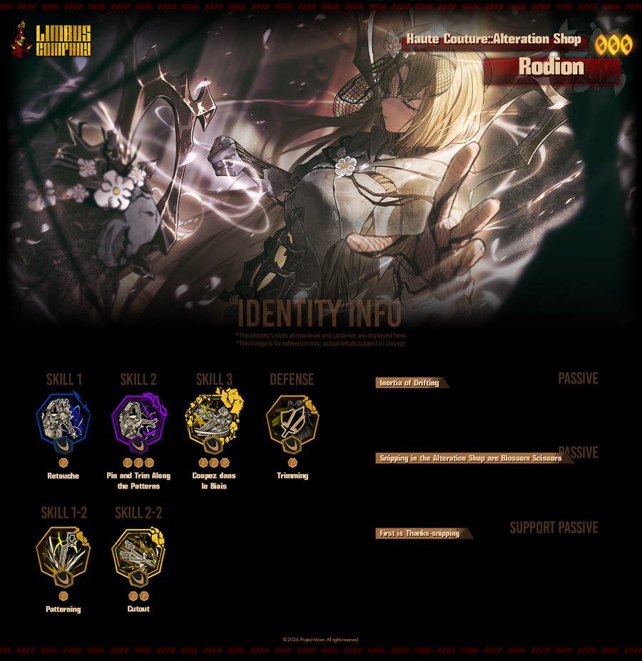
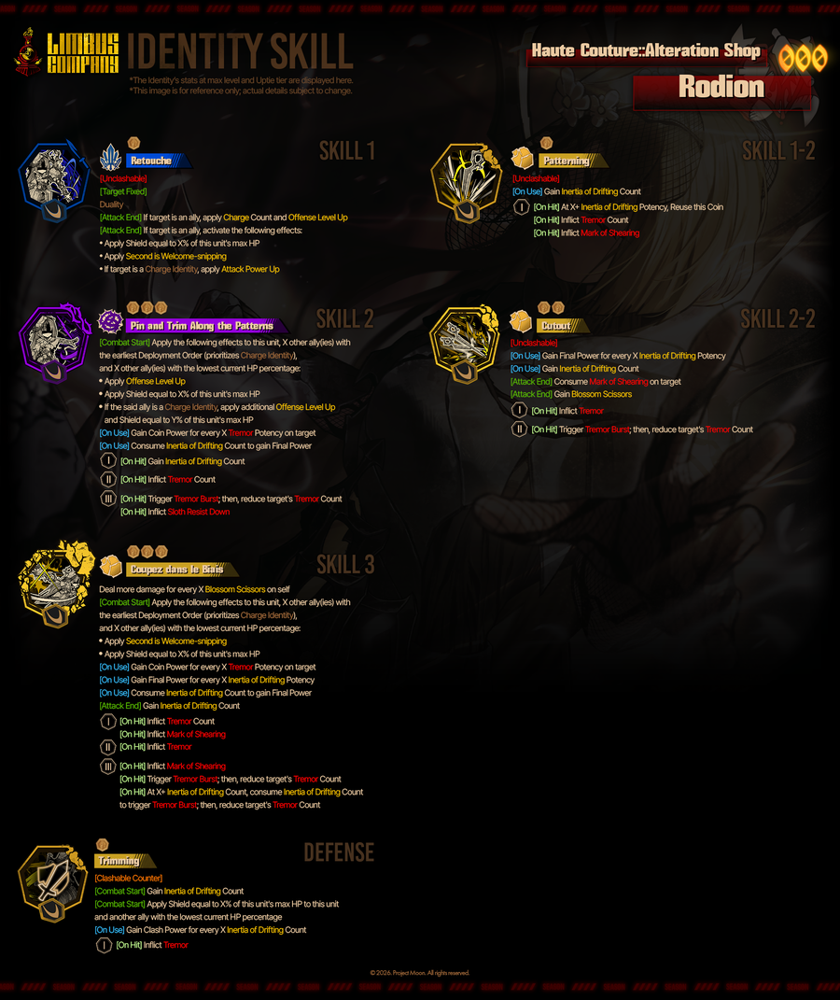
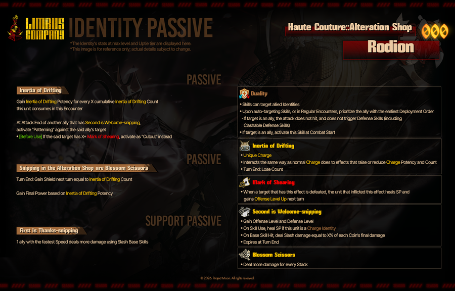

림버스 컴퍼니 오트쿠튀르 수선실 로쟈 사용 가이드, 충전·진동 덱 서포터 운영법
이번 시즌 8 푼크툼에 나온 신규 3성 '오트쿠튀르::수선실 로쟈'를 받고 스킬창부터 열어 보면, 키워드가 낯설어서 '이걸 어디에 쓰라는 거지' 싶으실 텐데요. 한마디로 충전 인격 아군에게 버프를 몰아주는 진동&충전 서포터예요. 개인 딜은 낮은 편이라 솔로 딜러보다는 덱의 윤활유 쪽이에요. 특정 추출(픽업)은 2026년 10월 8일 오전 10시(KST)까지라 D-4인데, 뽑기 전에 쓰임새부터 짚고 가세요. 10/8 이후 획득 경로(상시 추출 편입·자아 파편 교환)는 인게임에서 확인해 주세요. 수치는 나무위키·wiki.gg의 인게임 텍스트 기준이고 전부 최대 레벨·최대 동기화 기준이라, 인게임 툴팁과 한 번 더 맞춰 보세요.

공식 이미지(Project Moon), 스킬 아이콘 아래 점이 코인 수예요.
공식 이미지(Project Moon) · 출처: 림버스 컴퍼니 Steam 공지
이미지를 보시면 스킬 아이콘 아래에 코인 점이 1개, 3개, 3개, 1개로 찍혀 있죠? 스킬1과 수비가 1코인, 스킬2·3이 3코인이고 추가 스킬이 따로 둘 붙어 있다는 것만 먼저 눈에 담아 두세요.
1. 로쟈 기본 정보와 추출 기간
오트쿠튀르::수선실 로쟈는 시즌 8 신규 3성 인격으로, 충전 인격 아군을 밀어주는 진동&충전 서포터예요. 시즌 8 인격은 료슈, 이스마엘, 로쟈, 돈키호테 네 명이고 모두 3성입니다.
- 등급과 출시: 3성, 수감자 로쟈, 2026년 9월 24일 출시, 특성 키워드는 '시지프'
- 특정 추출 기간: 2026.09.24 12:00 ~ 10.08 10:00 (KST)
배너 아래 종료 일시가 10월 8일 오전 10시로 떠 있어요.
2. 스킬 6종, 코인 수와 핵심 효과
로쟈의 스킬은 기본 3종과 수비 1종, 추가 스킬 2종을 합쳐 6개이고, 전부 아군 버프와 진동·표류 관성을 쌓는 쪽으로 맞춰져 있어요.
| 스킬 | 코인 | 핵심 효과 (최대 동기화 기준) |
|---|---|---|
| 스킬1 르투슈 | 1 | 합 불가, 아군 지정 가능. 지정하면 적중 없이 전투 시작 시 발동해 충전 횟수 4와 공격 레벨 증가 1, 보호막(최대 체력 10%)과 '두 가위' 1을 부여. 턴당 2회 |
| 스킬2 고정 그리고 패턴 따라 재단 | 3 | 전투 시작 시 자신, 편성이 가장 빠른 아군(충전 인격 우선), 체력이 가장 낮은 아군에게 공격 레벨 증가와 보호막 5%. 3코인에 진동 폭발과 나태 내성 약화 |
| 스킬3 쿠페 당 르 비에 | 3 | '꽃가위' 1당 피해량 +30%(최대 +60%). 전투 시작 시 '두 가위' 1과 보호막 10%, 코인에 진동·'마름질 표식'·진동 폭발 |
| 추가1 패턴 따기 | 1 | 합 불가. 사용 시 표류 관성 횟수 +3, 적중 시 진동 +1과 마름질 표식 1 |
| 추가2 오려내기 | 2 | 합 불가. 공격 종료 시 대상의 마름질 표식 2를 소모하고 꽃가위 1 획득 |
| 수비 트리밍 | 1 | 강화 반격(합 가능). 전투 시작 시 표류 관성 횟수 +5, 자신과 체력 최저 아군 2명(인게임 기준)에게 보호막 10% |
표의 수치에는 4동기화에서 올라간 값이 포함돼 있어요(최대 동기화 기준).

공식 이미지(Project Moon), 코인마다 효과가 갈리는 구조가 그대로 보여요.
공식 이미지(Project Moon) · 출처: 림버스 컴퍼니 Steam 공지
스킬1·3 이름이 프랑스어 재단 용어라 입에 안 붙는데요ㅋㅋ 이름보다 '스킬1은 아군에게 쏘는 버프, 스킬3은 꽃가위로 불려 먹는 딜'이라는 역할만 기억하셔도 충분해요.
3. 패시브와 키워드, 패턴 따기에서 오려내기로
핵심 패시브 '표류 관성'은 '두 가위'를 가진 아군이 공격을 끝낼 때마다 그 대상에게 '패턴 따기'를 자동으로 얹어 주는 추격 장치입니다.
- '표류 관성': 로쟈 전용 충전 키워드. 최대 횟수 20, 턴 종료 시 1 감소, 누적 10 소모마다 위력 1
- '두 가위': 공격·방어 레벨 +3. 충전 인격이 쓰면 스킬 사용 시 정신력 5 회복, 턴 종료 시 사라짐
- '마름질 표식': 최대 4. 표식을 가진 대상이 죽으면 부여자가 정신력 5 회복
- '꽃가위': 최대 2, 수치당 피해량 +7%
순서는 단순해요. 아군 공격이 끝나면 '패턴 따기'가 대상에게 표식을 심고(턴당 1회), 표식이 2 이상 쌓인 대상에게는 '오려내기'로 바뀌어 표식 2를 먹으면서 꽃가위를 챙겨 줍니다. 그 꽃가위가 스킬3 피해량으로 돌아오는 구조고, 전투 패시브 '수선실의 꽃가위 소리'는 턴 종료 때 표류 관성 횟수만큼 다음 턴 보호막을 깔아 줍니다.

공식 이미지(Project Moon), 오른쪽 상자가 키워드 5종 설명이에요.
공식 이미지(Project Moon) · 출처: 림버스 컴퍼니 Steam 공지
서포트 패시브 '한 가위'는 속도가 가장 빠른 아군 1명의 참격 기본 스킬 피해량을 10% 올려 주는데요, 이걸 켜려면 나태 4 보유가 조건이에요(인게임 확인 권장).
4. 턴 운영 순서 카드, 충전 인격 아군과 쓰는 법
로쟈는 스킬1을 충전 인격 아군에게 지정해 두고, 아군이 '두 가위' 상태로 공격한 뒤 패턴 따기에서 오려내기로 이어 가는 순서로 굴리면 됩니다.
| 순서 | 할 일 | 이유 |
|---|---|---|
| ① | 스킬1을 충전 인격 아군에게 지정하세요 | 전투 시작 시 발동이라 행동 순서에 안 밀리고, 충전 인격이면 공격 위력 증가가 추가됩니다 |
| ② | 아군이 '두 가위' 상태로 공격을 하게 두세요 | 두 가위를 가진 아군의 공격이 끝나야 로쟈 패시브가 돌아갑니다 |
| ③ | 로쟈의 '패턴 따기' 추격을 확인하세요 | 표류 관성이 자동 발동해 진동과 마름질 표식을 쌓습니다(턴당 1회) |
| ④ | 표식이 2 이상이면 '오려내기'로 바뀌는지 보세요 | 표식 2를 소모하고 꽃가위 1을 얻어 스킬3 피해량이 올라갑니다 |
스킬1 화살표는 적이 아니라 아군 쪽으로 보내야 해요.
정신력 쪽도 챙겨 두면 좋아요. 합에서 이기면 정신력이 오르고(기본 10), 같거나 높은 레벨의 적을 직접 처치하면 +10, 아군이 처치하면 +5가 붙습니다. 여기에 '두 가위'의 정신력 5 회복이 겹치니 충전 인격 아군의 정신력 관리가 한결 수월해지는 구조예요.
한 가지 주의할 점은 스킬1이 합 불가라는 거예요. 합이 필요한 상황에서는 원호 방어가 되는 아군이나 E.G.O로 받쳐 주세요.
5. 주의점과 동기화 변경점
스킬1은 반드시 아군에게 지정해야 효과가 나고, 로쟈 혼자서는 합과 딜이 모두 약한 편이라 덱 안에서의 역할을 먼저 정해 두는 게 좋습니다.
- 일부 커뮤니티 댓글 기준으로는 스킬1을 적에게 쓰면 효과가 없다고 하니 지정 대상부터 확인하세요
- 스킬2·3의 합 위력은 기본 16·17, 키워드 조건이 맞으면 24·25까지 오릅니다(최대 동기화 기준)
- 진동과 표류 관성이 쌓이기 전 초반 턴은 예열이 느려 딜이 낮아요
4동기화에서 바뀌는 주요 값은 나무위키 기준으로 아래와 같아요. 실제 수치는 인게임 인격 정보에서 한 번 더 확인해 보세요.
| 스킬 | 4동기화 변경점 (나무위키 기준·인게임 확인) |
|---|---|
| 스킬1 | 기본 위력 5→6, 보호막 5→10%, 발동 턴당 1→2회, 공격 위력 증가 1→2 |
| 스킬2 | '체력 최저 아군' 조건 추가, 3코인에 나태 내성 약화 추가 |
| 스킬3 | 기본 위력 4→5, 꽃가위 1당 +15→30%(최대 +60%), '두 가위' 부여 대상에 자신 포함, 보호막 5→10% |
| 수비 | 보호막 5→10%, '횟수 5당 합 위력 +1(최대 4)' 추가 |
자주 묻는 질문
Q. 뽑을 가치가 있나요?
충전 인격과 진동 덱을 이미 굴리고 있다면 궁합이 잘 맞는 서포터예요. 반대로 덱에 충전 인격이 없으면 스킬1 효과를 절반도 못 쓰니 후순위로 두셔도 돼요.
Q. 예전에 나온 '거미집 엄지 아비 로쟈'와 같은 인격인가요?
아니에요. 거미집 엄지 아비는 같은 수감자 로쟈의 다른 인격(시즌 7 3성)이라, 이번 오트쿠튀르와는 인격이 달라 스킬·역할이 다릅니다. 예전 글 '거미집 엄지 아비 로쟈 공략'과 헷갈리지 마세요.
Q. 영상 가이드도 있나요?
유튜브 채널 '제리'에 [림버스 컴퍼니] 오트쿠튀르::수선실 로쟈 사용 가이드 영상이 올라와 있는데요. 이 글은 영상과 별개로 구조는 공식 이미지, 수치는 최대 레벨·최대 동기화 기준 인게임 툴팁(위키 전사)으로 정리했으니, 운영 순서는 영상과 같이 비교해 보세요.
참고한 곳
· 림버스 컴퍼니 공식 Steam 공지 (2026.10.04 기준)
▶ 같이 보면 좋은 글
· 림버스컴퍼니 10장 히든 아이템 상점 보스 위치 공략
· 림버스컴퍼니 10장 바라보아지는 9월 17일 풀보이스 공개 예정, 연기 경위와 팬 투표 결과
· 림버스컴퍼니 유파우 새벽사무소 파우스트 스킬 공략